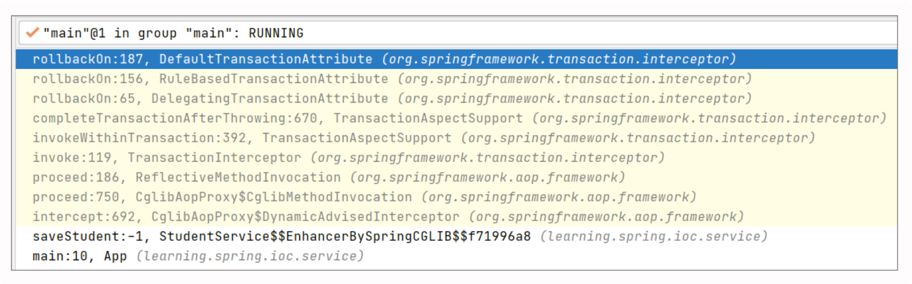

Spring事务常见错误
本文最后更新于：2022年8月15日 下午
unchecked异常与事务回滚
1 | |
我们通过 debug 沿着 saveStudent 继续往下跟，得到了一个这样的调用栈:

从这个调用栈中我们看到了熟悉的 CglibAopProxy，另外事务本质上也是一种特殊的切面，在创建的过程中，被 CglibAopProxy 代理。事务处理的拦截器是TransactionInterceptor，它支撑着整个事务功能的架构，我们来分析下这个拦截器是如何实现事务特性的。
首先，TransactionInterceptor 继承类 TransactionAspectSupport，实现了接口MethodInterceptor。当执行代理类的目标方法时，会触发 invoke()。由于我们的关注重点是在异常处理上，所以直奔主题，跳到异常处理相关的部分。当它 catch 到异常时，会调用 completeTransactionAfterThrowing 方法做进一步处理。
在 completeTransactionAfterThrowing 的代码中，有这样一个方法 rollbackOn()，这是事务的回滚的关键判断条件。当这个条件满足时，会触发 rollback 操作，事务回滚。
rollbackOn() 其实包括了两个层级，具体可参考如下代码：
1.RuleBasedTransactionAttribute 自身的 rollbackOn()
当我们在 @Transactional 中配置了 rollbackFor，这个方法就会用捕获到的异常和rollbackFor 中配置的异常做比较。如果捕获到的异常是 rollbackFor 配置的异常或其子类，就会直接 rollback。在我们的案例中，由于在事务的注解中没有加任何规则，所以这段逻辑处理其实找不到规则（即 winner == null），进而走到下一步。
2.RuleBasedTransactionAttribute 父类 DefaultTransactionAttribute 的 rollbackOn()
如果没有在 @Transactional 中配置 rollback 属性，或是捕获到的异常和所配置异常的类型不一致，就会继续调用父类的 rollbackOn() 进行处理。
而在父类的 rollbackOn() 中，我们发现了一个重要的线索，只有在异常类型为RuntimeException 或者 Error 的时候才会返回 true，此时，会触发completeTransactionAfterThrowing 方法中的 rollback 操作，事务被回滚。
查到这里，真相大白，Spring 处理事务的时候，如果没有在 @Transactional 中配置rollback 属性，那么只有捕获到 RuntimeException 或者 Error 的时候才会触发回滚操作。而我们案例抛出的异常是 Exception，又没有指定与之匹配的回滚规则，所以我们不能触发回滚。
试图给private方法添加事务
1 | |
通过debug，我们一步步寻找到了问题的根源，得到了以下调用栈。我们通过 Spring的源码来解析一下完整的过程。

前一段是 Spring 创建 Bean 的过程。当 Bean 初始化之后，开始尝试代理操作，这个过程是从 AbstractAutoProxyCreator 里的 postProcessAfterInitialization 方法开始处理的：
我们一路往下找，暂且略过那些非关键要素的代码，直到到了 AopUtils 的 canApply 方法。这个方法就是针对切面定义里的条件，确定这个方法是否可以被应用创建成代理。其中有一段 methodMatcher.matches(method, targetClass) 是用来判断这个方法是否符合这样的条件：

从 matches() 调用到了 AbstractFallbackTransactionAttributeSource的getTransactionAttribute：
其中，getTransactionAttribute 这个方法是用来获取注解中的事务属性，根据属性确定事务采用什么样的策略。
接着调用到 computeTransactionAttribute 这个方法，其主要功能是根据方法和类的类型确定是否返回事务属性，执行代码如下：
这里有这样一个判断 allowPublicMethodsOnly() &&!Modifier.isPublic(method.getModifiers()) ，当这个判断结果为 true 的时候返回 null，也就意味着这个方法不会被代理，从而导致事务的注解不会生效。那此处的判断值到底是不是 true 呢？我们可以分别看一下。
条件 1：allowPublicMethodsOnly()
allowPublicMethodsOnly 返回了 AnnotationTransactionAttributeSource的publicMethodsOnly 属性。
springframework:5.2.5.RELEASE,不同版本默认值不同
这个publicMethodsOnly 属性是通过 AnnotationTransactionAttributeSource 的构造方法初始化的，默认为 false。
条件 2：Modifier.isPublic()
这个方法根据传入的 method.getModifiers() 获取方法的修饰符。该修饰符是java.lang.reflect.Modifier 的静态属性，对应的几类修饰符分别是：PUBLIC: 1，PRIVATE: 2，PROTECTED: 4。这里面做了一个位运算，只有当传入的方法修饰符是public 类型的时候，才返回 true。
综合上述两个条件，你会发现，只有当注解为事务的方法被声明为 public 的时候，才会被Spring 处理。
问题修正
了解了问题的根源以后，解决它就变得很简单了，我们只需要把它的修饰符从 private 改成 public 就可以了。不过需要额外补充的是，我们调用这个加了事务注解的方法，必须是调用被 Spring AOP代理过的方法，也就是不能通过类的内部调用或者通过 this 的方式调用。
所以我们的案例的 StudentService，它含有一个自动装配（Autowired）了自身（StudentService）的实例来完成代理方法的调用。这个问题我们在之前 Spring AOP 的代码解析中重点强调过，此处就不再详述了。
嵌套事务回滚错误
我们增加了一个新的业务类 CourseService，用于实现相关业务逻辑。分别调用了两个方法来保存学生与课程的关联关系，并给课程注册人数+1。最后，别忘了给这个方法加上事务注解。
我们在之前的 StudentService.saveStudent() 中调用了 regCourse()，实现了完整的业务逻辑。为了避免注册课程的业务异常导致学生信息无法保存，在这里 catch 了注册课程方法中抛出的异常。我们希望的结果是，当注册课程发生错误时，只回滚注册课程部分，保证学生信息依然正常。
为了验证异常是否符合预期，我们在 regCourse() 里抛出了一个注册失败的异常：
运行一下这段代码，在控制台里我们看到了以下提示信息：
运行一下这段代码，在控制台里我们看到了以下提示信息：其中，注册失败部分的异常符合预期，但是后面又多了一个这样的错误提示：Transaction rolled back because it has been marked as rollback-only。
最后的结果是，学生和选课的信息都被回滚了，显然这并不符合我们的预期。我们期待的结果是即便内部事务 regCourse() 发生异常，外部事务 saveStudent() 俘获该异常后，内部事务应自行回滚，不影响外部事务。那么这是什么原因造成的呢？我们需要研究一下Spring 的源码，来找找答案。
案例解析
在做进一步地解析之前，我们可以先通过伪代码把整个事务的结构梳理一下：
可以看出来，整个业务是包含了2层事务，外层的saveStudent()的事务和内层的regCourse() 事务。
在 Spring 声明式的事务处理中，有一个属性 propagation，表示打算对这些方法怎么使用事务，即一个带事务的方法调用了另一个带事务的方法，被调用的方法它怎么处理自己事务和调用方法事务之间的关系。
其中 propagation 有 7 种配置：REQUIRED、SUPPORTS、MANDATORY、REQUIRES_NEW、NOT_SUPPORTED、NEVER、NESTED。默认是 REQUIRED，它的含
义是：如果本来有事务，则加入该事务，如果没有事务，则创建新的事务。
结合我们的伪代码示例，因为在 saveStudent() 上声明了一个外部的事务，就已经存在一个事务了，在 propagation 值为默认的 REQUIRED 的情况下， regCourse() 就会加入到已有的事务中，两个方法共用一个事务。
我们再来看下 Spring 事务处理的核心，其关键实现参考
TransactionAspectSupport.invokeWithinTransaction()：
整个方法完成了事务的一整套处理逻辑，如下：
1.检查是否需要创建事务；
2.调用具体的业务方法进行处理；
3.提交事务；
4.处理异常。
这里要格外注意的是，当前案例是两个事务嵌套的场景，外层事务 doSaveStudent() 和内层事务 regCourse()，每个事务都会调用到这个方法。所以，这个方法会被调用两次。下面我们来具体来看下内层事务对异常的处理。
当捕获了异常，会调用TransactionAspectSupport.completeTransactionAfterThrowing() 进行异常处理：
1 | |
在这个方法里，我们对异常类型做了一些检查，当符合声明中的定义后，执行了具体的rollback 操作，这个操作是通过 TransactionManager.rollback() 完成的：
1 | |
而 rollback() 是在 AbstractPlatformTransactionManager 中实现的，继续调用了processRollback()：
这个方法里区分了三种不同类型的情况：
1.是否有保存点；
2.是否为一个新的事务；
3.是否处于一个更大的事务中。
在这里，因为我们用的是默认的传播类型 REQUIRED，嵌套的事务并没有开启一个新的事务，所以在这种情况下，当前事务是处于一个更大的事务中，所以会走到情况3分支1的代码块下。
这里有两个判断条件来确定是否设置为仅回滚：
if (status.isLocalRollbackOnly() || isGlobalRollbackOnParticipationFailure())
满足任何一个，都会执行 doSetRollbackOnly() 操作。isLocalRollbackOnly 在当前的情 况下是 false，所以是否分设置为仅回滚就由 isGlobalRollbackOnParticipationFailure()这个方法来决定了，其默认值为 true， 即是否回滚交由外层事务统一决定 。
显然这里的条件得到了满足，从而执行 doSetRollbackOnly：
1 | |
以及最终调用到的 DataSourceTransactionObject 中的 setRollbackOnly()：
1 | |
到这一步，内层事务的操作基本执行完毕，它处理了异常，并最终调用到了DataSourceTransactionObject 中的 setRollbackOnly() 。
接下来，我们来看外层事务。因为在外层事务中，我们自己的代码捕获了内层抛出来的异常，所以这个异常不会继续往上抛，最后的事务会在 TransactionAspectSupport.invokeWithinTransaction() 中的 commitTransactionAfterReturning() 中进行处理：
1 | |
在这个方法里我们执行了 commit 操作，代码如下：
1 | |
在 AbstractPlatformTransactionManager.commit() 中，当满足了shouldCommitOnGlobalRollbackOnly() 和 defStatus.isGlobalRollbackOnly()，就会回
滚，否则会继续提交事务。其中 shouldCommitOnGlobalRollbackOnly() 的作用为，如果发现了事务被标记了全局回滚，并且在发生了全局回滚的情况下，判断是否应该提交事务，这个方法的默认实现是返回了 false，这里我们不需要关注它，继续查看isGlobalRollbackOnly() 的实现：
1 | |
这个方法最终进入了 DataSourceTransactionObject 类中的 isRollbackOnly()：
1 | |
现在让我们再次回顾一下之前的内部事务处理结果，其最终调用到的是DataSourceTransactionObject 中的 setRollbackOnly()：
1 | |
isRollbackOnly() 和 setRollbackOnly() 这两个方法的执行本质都是对ConnectionHolder 中 rollbackOnly 属性标志位的存取，而 ConnectionHolder 则存在于 DefaultTransactionStatus 类实例的 transaction 属性之中。
至此，答案基本浮出水面了，我们把整个逻辑串在一起就是：外层事务是否回滚的关键，最终取决于 DataSourceTransactionObject 类中的 isRollbackOnly()，而该方法的返回值，正是我们在内层异常的时候设置的。
所以最终外层事务也被回滚了，从而在控制台中打印出异常信息：”Transaction rolled back because it has been marked as rollback-only”。
所以到这里，问题也就清楚了，Spring 默认的事务传播属性为 REQUIRED，如我们之前介绍的，它的含义是：如果本来有事务，则加入该事务，如果没有事务，则创建新的事务，因而内外两层事务都处于同一个事务中。所以，当我们在 regCourse() 中抛出异常，并触发了回滚操作时，这个回滚会进一步传播，从而把 saveStudent() 也回滚了。最终导致整个事务都被回滚了。
问题修正
从上述案例解析中，我们了解到，Spring 在处理事务过程中，有个默认的传播属性REQUIRED，在整个事务的调用链上，任何一个环节抛出的异常都会导致全局回滚。
知道了这个结论，修改方法也就很简单了，我们只需要对传播属性进行修改，把类型改成REQUIRES_NEW 就可以了。于是这部分代码就修改成这样：
运行一下看看：
异常正常抛出，注册课程部分的数据没有保存，但是学生还是正常注册成功。这意味着此时 Spring 只对注册课程这部分的数据进行了回滚，并没有传播到上一级。
这里我简单解释下这个过程：
- 当子事务声明为 Propagation.REQUIRES_NEW 时，在TransactionAspectSupport.invokeWithinTransaction() 中调用createTransactionIfNecessary() 就会创建一个新的事务，独立于外层事务。
- 而在 AbstractPlatformTransactionManager.processRollback() 进行 rollback 处理时，因为 status.isNewTransaction() 会因为它处于一个新的事务中而返回 true，所以它走入到了另一个分支，执行了 doRollback() 操作，让这个子事务单独回滚，不会影响到主事务。
至此，这个问题得到了很好的解决。
多数据源间切换之谜
案例解析
这是一个相对常见的需求，学生注册和发卡都要在一个事务里完成，但是我们都默认只会连一个数据源，之前我们一直连的都是学生信息这个数据源，在这里，我们还需要对校园卡的数据源进行操作。于是，我们需要在一个事务里完成对两个数据源的操作，该如何实现这样的功能呢？
我们继续从 Spring 的源码中寻找答案。在 Spring 里有这样一个抽象类AbstractRoutingDataSource，这个类相当于 DataSource 的路由中介，在运行时根据某种key 值来动态切换到所需的 DataSource 上。通过实现这个类就可以实现我们期望的动态数据源切换。
这里强调一下，这个类里有这么几个关键属性：
- targetDataSources 保存了 key 和数据库连接的映射关系；
- defaultTargetDataSource 标识默认的连接；
- resolvedDataSources 存储数据库标识和数据源的映射关系。
1 | |
AbstractRoutingDataSource 实现了 InitializingBean 接口，并覆写了afterPropertiesSet()。该方法会在初始化 Bean 的时候执行，将多个 DataSource 初始化到 resolvedDataSources。这里的 targetDataSources 属性存储了将要切换的多数据源Bean 信息。
1 | |
获取数据库连接的是 getConnection()，它调用了 determineTargetDataSource() 来创建连接：
1 | |
determineTargetDataSource() 是整个部分的核心，它的作用就是动态切换数据源。有多少个数据源，就存多少个数据源在 targetDataSources 中。
targetDataSources 是一个 Map 类型的属性，key 表示每个数据源的名字，value 对应的是每个数据源 DataSource。
1 | |
而选择哪个数据源又是由 determineCurrentLookupKey() 来决定的，此方法是抽象方法，需要我们继承 AbstractRoutingDataSource 抽象类来重写此方法。该方法返回一个key，该 key 是 Bean 中的 beanName，并赋值给 lookupKey，由此 key 可以通过resolvedDataSources 属性的键来获取对应的 DataSource 值，从而达到数据源切换的效果。
1 | |
这样看来，这个方法的实现就得由我们完成了。接下来我们将会完成一系列相关的代码，解决这个问题。
问题修正
首先，我们创建一个 MyDataSource 类，继承了 AbstractRoutingDataSource，并覆写了 determineCurrentLookupKey()：
其次，我们需要修改 JdbcConfig。这里我新写了一个 dataSource，将原来的dataSource 改成 dataSourceCore，再将新定义的 dataSourceCore 和 dataSourceCard放进一个 Map，对应的 key 分别是 core 和 card，并把 Map 赋值给setTargetDataSources

最后还剩下一个问题，setDataSource 这个方法什么时候执行呢？
我们可以用 Spring AOP 来设置，把配置的数据源类型都设置成注解标签， Service 层中在切换数据源的方法上加上注解标签，就会调用相应的方法切换数据源。
我们定义了一个新的注解 @DataSource，可以直接加在 Service() 上，实现数据库切换：
声明方法如下：
另外，我们还需要写一个 Spring AOP 来对相应的服务方法进行拦截，完成数据源的切换操作。特别要注意的是，这里要加上一个 @Order(1) 标记它的初始化顺序。这个 Order值一定要比事务的 AOP 切面的值小，这样可以获得更高的优先级，否则自动切换数据源将会失效。
最后，我们实现了 Card 的发卡逻辑，在方法前声明了切换数据库：
并在 saveStudent() 里调用了发卡逻辑：
执行一下，一切正常，两个库的数据都可以正常保存了。
最后我们来看一下整个过程的调用栈，重新过一遍流程（这里我略去了不重要的部分）。
在创建了事务以后，会通过 DataSourceTransactionManager.doBegin() 获取相应的数据库连接：
1 | |
这里的 obtainDataSource().getConnection() 调用到了AbstractRoutingDataSource.getConnection()，这就与我们实现的功能顺利会师了。
1 | |